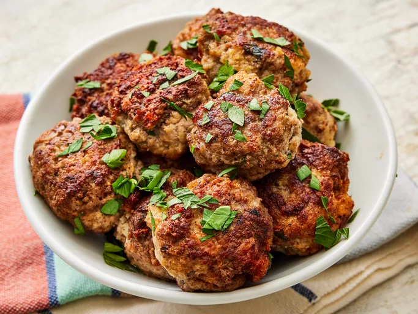

Meatballs Recipe

A very delicious meatball recipe that will make your mouth watery!
Meatballs are most known as an integral part of Spaghetti dish.
They are simple yet elegant and most of all, delicious!
This is a complete guide on how to make meatballs right in your home
to enjoy with family and friends alike!
Macros Distribution
- Calories: 613kcal
- Fat: 53g
- Carbohydrates: 7g
- Protein: 27g
Ingredients
- 1 pound Ground Beef
- 1/2 pound Ground Veal
- 1/2 pound Ground Pork
- 1 cup Grated Romano Cheese
- 2 whole Eggs
- 2 cloves Minced Garlic
- 1 1/2 tbsp Chopped Italian Parsley
- Salt and Ground Pepper
- 1 1/2 cups Room Temperature Water
- 1 cup Olive Oil
Procedures
- Combine beef, veal, and pork in a large bowl.
- Mix in the cheese, eggs, garlic, parsley, salt and pepper.
- Add bread crumbs and slowly mix in water, 1/2 cup at a time until mixture is moist but can maintain shape.
- Shape the mixture into meatballs.
- Heat up olive oil in a pan or skillet and add meatballs in batches and cook until
brown on all sides for about 10 to 15 minutes.
- Remove the excess oil with paper towels and enjoy!